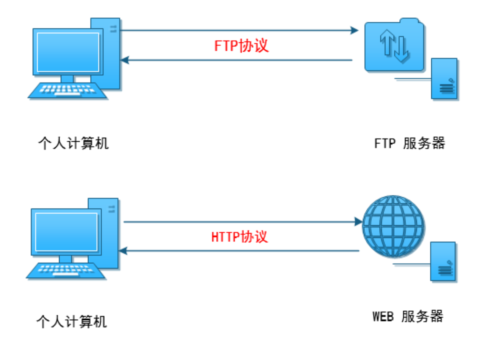
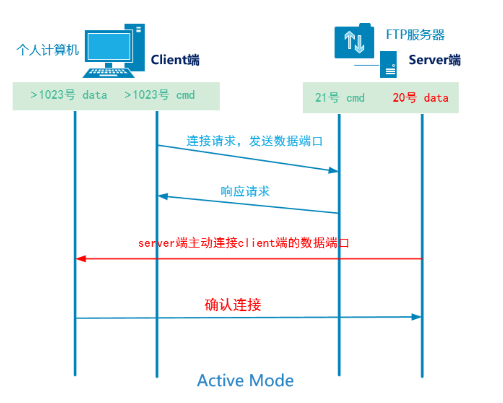
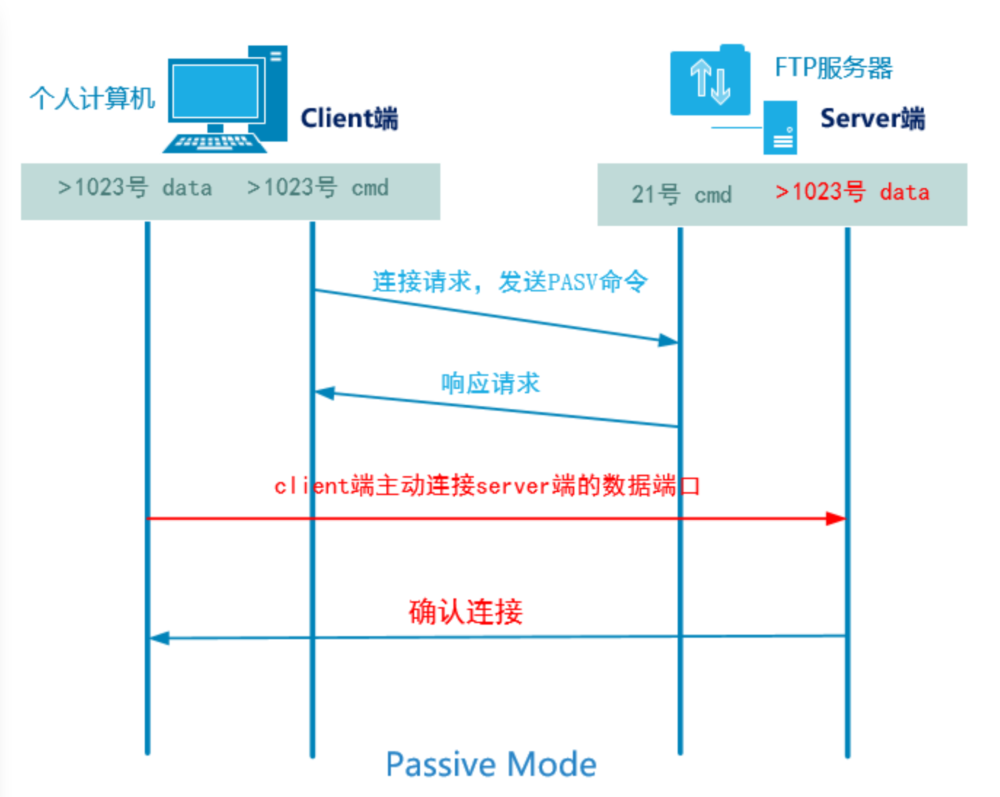
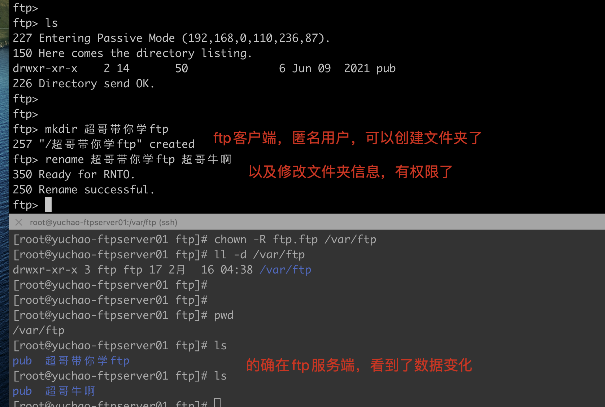
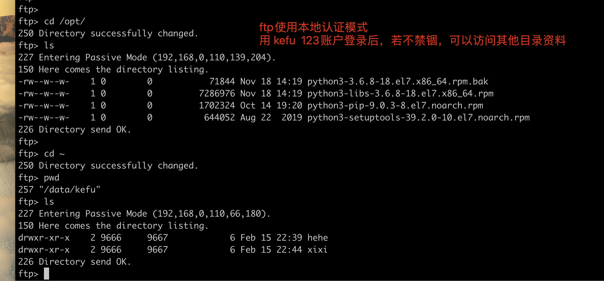

03-文件共享服务之FTP
什么是FTP
对于使用互联网的用户来说，首要目的就是获取资料，能够获取文件资料的方式有很多，其中一种就是文件传输，如今的互联网机器有各种型号、品牌，类型，如dell、惠普、浪潮、IBM、也分为个人PC、工作站、服务器、大型机、超级计算机等，并且还分为Windows、Linux、Unix、Mac等不同的操作系统。
为了能够在这么多样的机器之间传输文件，FTP（文件传输协议、File Transfer protocol）诞生了。
任务背景
某创业公司刚刚起步，随着业务量的增多，咨询和投诉的用户也越来越多，公司的客服部门由原来的2个增加到5个。
客服部门平时需要处理大量的用户反馈，不管是邮件，还是ＱＱ，还是电话，客服人员都会针对每一次的用户反馈做
详细的记录
但是由于客观原因，客服人员没有成熟稳定的客户服务系统，所以希望运维部门能够协助搭建一个文件共享服务来管理这些文档，并且随时跟踪客户的反馈情况。
任务要求
- 客服人员必须使用==用户名密码==(kefu/123)的方式登录服务器来下载相应文档
- ==不允许匿名==用户访问
- 客服部门的相关文档保存在==指定的目录==里/data/kefu local_root=/data/kefu
- 客服用户使用用户kefu/123登录后就==只能==在默认的==/data/kefu目录里活动==
任务拆解
- 搭建ftp服务（新知识点）
- 根据需求修改配置文件
- 不允许匿名用户访问
- 指定kefu人员数据目录，并且只能在指定目录活动
涉及知识点
- FTP服务的搭建（掌握）
- FTP服务的基本配置（==重点==）
课程目标
- 了解FTP服务的工作模式
- ==能够禁止FTP服务匿名用户登录==
- ==能够禁锢FTP服务本地用户的家目录==
- ==能够指定FTP服务本地用户和匿名用户的默认数据目录==
理论储备
一、FTP服务介绍
FTP（File Transfer Protocol）是一种应用非常广泛并且古老的一个互联网文件传输协议。

- 主要用于互联网中==文件的双向传输==（上传/下载）、文件共享
- 跨平台 Linux、Windows
- FTP是==C/S==架构，拥有一个客户端和服务端，使用==TCP协议==作为底层传输协议，提供可靠的数据传输
- FTP的默认端口
- ==21号==（命令端口）
- ==20号==（数据端口，主动模式下） 默认被动模式下
- FTP程序（软件）==vsftpd==
二、FTP服务的客户端工具
- Linux：ftp、lftp（客户端程序）
- Windows：FileZilla、IE、Chrome、Firefox
- lftp和ftp工具区别：
- lftp：默认是以==匿名用户==访问
- ftp：默认是以==用户名/密码==方式访问
- lftp可以批量并且下载目录
三、FTP的两种工作模式
FTP客户端用于向服务器索要资源
FTP工作模式主要分为两种（主要是服务端的选择）
- 主动模式（PORT）：FTP服务器主动向客户端发起连接请求
- 被动模式（PASV）：FTP服务器等待客户端发起连接请求。
主动模式

- 客户端打开大于1023的随机命令端口和大于1023的随机数据端口向服务的的21号端口发起请求
- ==服务端==的21号命令端口响应客户端的随机命令端口
- ==服务端==的20号端口==主动==请求连接客户端的随机数据端口
- 客户端的随机数据端口进行确认
被动模式

- 客户端打开大于1023的随机命令端口和大于1023的随机数据端口向服务的的21号端口发起请求
- 服务端的21号命令端口响应客户端的随机命令端口
- ==客户端主动==连接服务端打开的大于1023的随机数据端口
- 服务端进行确认
FTP默认是被动模式。
四、搭建简单FTP服务
- 关闭防火墙和selinux
- 配置yum源
- 软件三部曲
- 了解配置文件
- 根据需求修改配置文件来完成服务的搭建
- 启动服务，开机自启动
- 测试验证
ftp服务端，关于ftp的软件、配置文件
[root@server ~]# rpm -ql vsftpd
/etc/rc.d/init.d/vsftpd 启动脚本
/etc/vsftpd 配置文件的目录
/etc/vsftpd/ftpusers 用户列表文件，黑名单
/etc/vsftpd/user_list 用户列表文件，可黑可白（默认是黑名单）
/etc/vsftpd/vsftpd.conf 配置文件
/usr/sbin/vsftpd 程序本身（二进制的命令）
/var/ftp 匿名用户的默认数据根目录
/var/ftp/pub 匿名用户的扩展数据目录
[root@ftp-server ~]# grep -v ^# /etc/vsftpd/vsftpd.conf
anonymous_enable=YES 支持匿名用户访问
local_enable=YES 非匿名用户，用linux本地用户认证
write_enable=YES 写总开关(主要针对非匿名用户)
local_umask=022 遮罩码 file:644 rw- r-- r-- dir:755
dirmessage_enable=YES 启用消息功能
xferlog_enable=YES 开启或启用xferlog日志
connect_from_port_20=YES 支持主动模式（默认被动模式）
xferlog_std_format=YES xferlog日志格式
listen=YES ftp服务独立模式下的监听
pam_service_name=vsftpd 指定认证文件
userlist_enable=YES 启用用户列表(user_list黑名单)
tcp_wrappers=YES 支持tcp_wrappers功能(限流)
ftp服务端认证形式
vsftpd允许用户三种认证的模式登录到FTP服务器。
- 本地用户模式，基于Linux本地账号密码进行认证，配置简单，但是一旦被破解，服务器信息就很危险
- 匿名用户模式，任何人无需密码直接登录
- 虚拟用户模式，单独为FTP创建用户数据库，基于口令验证账户信息，只适用于FTP，不会影响其他用户信息，最为安全。
ftp常用命令
ftp> ascii # 设定以ASCII方式传送文件(缺省值)
ftp> bell # 每完成一次文件传送,报警提示.
ftp> binary # 设定以二进制方式传送文件.
ftp> bye # 终止主机FTP进程,并退出FTP管理方式.
ftp> case # 当为ON时,用MGET命令拷贝的文件名到本地机器中,全部转换为小写字母.
ftp> cd # 同UNIX的CD命令.
ftp> cdup # 返回上一级目录.
ftp> chmod # 改变远端主机的文件权限.
ftp> close # 终止远端的FTP进程,返回到FTP命令状态, 所有的宏定义都被删除.
ftp> delete # 删除远端主机中的文件.
ftp> dir [remote-directory] [local-file] # 列出当前远端主机目录中的文件.如果有本地文件,就将结果写至本地文件.
ftp> get [remote-file] [local-file] # 从远端主机中传送至本地主机中.
ftp> help [command] # 输出命令的解释.
ftp> lcd # 改变当前本地主机的工作目录,如果缺省,就转到当前用户的HOME目录.
ftp> ls [remote-directory] [local-file] # 同DIR.
ftp> macdef # 定义宏命令.
ftp> mdelete [remote-files] # 删除一批文件.
ftp> mget [remote-files] # 从远端主机接收一批文件至本地主机.
ftp> mkdir directory-name # 在远端主机中建立目录.
ftp> mput local-files # 将本地主机中一批文件传送至远端主机.
ftp> open host [port] # 重新建立一个新的连接.
ftp> prompt # 交互提示模式.
ftp> put local-file [remote-file] # 将本地一个文件传送至远端主机中.
ftp> pwd # 列出当前远端主机目录.
ftp> quit # 同BYE.
ftp> recv remote-file [local-file] # 同GET.
ftp> rename [from] [to] # 改变远端主机中的文件名.
ftp> rmdir directory-name # 删除远端主机中的目录.
ftp> send local-file [remote-file] # 同PUT.
ftp> status # 显示当前FTP的状态.
ftp> system # 显示远端主机系统类型.
ftp> user user-name [password] [account] # 重新以别的用户名登录远端主机.
ftp> ? [command] # 同HELP. [command]指定需要帮助的命令名称。如果没有指定 command，ftp 将显示全部命令的列表。
ftp> ! # 从 ftp 子系统退出到外壳。
五、匿名模式认证
匿名用户模式是最不安全的方式，一般用在访问不重要的，允许公开的文件，且放在企业内网环境中，置于防火墙规则下，保证基本的安全性。
vsftpd默认开启了匿名用户模式，修改配置文件，定义匿名用户的权限，如下
修改配置文件，打开如下参数
[root@chaogelinux ~]# grep '^anon' /etc/vsftpd/vsftpd.conf
anonymous_enable=YES #允许匿名访问
anon_upload_enable=YES #允许匿名用户上传
anon_mkdir_write_enable=YES #允许匿名用户创建目录
anon_other_write_enable=YES #允许匿名用户修改目录
重启vsftpd服务
[root@yuchao-ftpserver01 ~]# systemctl restart vsftpd
测试ftp客户端，查看匿名模式
默认匿名用户有俩、ftp、anonymous 无密码。
[root@yuchao-ftpclient01 ~]# ftp 192.168.0.110
Connected to 192.168.0.110 (192.168.0.110).
220 (vsFTPd 3.0.2)
Name (192.168.0.110:root): anonymous
331 Please specify the password.
Password:
230 Login successful.
Remote system type is UNIX.
Using binary mode to transfer files.
ftp> ls
227 Entering Passive Mode (192,168,0,110,95,212).
150 Here comes the directory listing.
drwxr-xr-x 2 0 0 6 Jun 09 2021 pub
226 Directory send OK.
ftp>
ftp> pwd
257 "/"
尝试创建文件夹，发现权限不够
ftp> mkdir 超哥牛啊
550 Create directory operation failed.
匿名用户默认登录到server上的位置是在
[root@yuchao-ftpserver01 ftp]# pwd
/var/ftp
[root@yuchao-ftpserver01 ftp]# ls
pub
为什么匿名用户没有创建权限
由于我们使用匿名用户登录ftp，默认访问的是/var/ftp文件夹，我们来检查下文件夹权限
[root@yuchao-ftpserver01 ftp]# ll -d /var/ftp
drwxr-xr-x 3 root root 17 2月 16 04:38 /var/ftp
[root@yuchao-ftpserver01 ftp]# ll -d /var/ftp/pub
drwxr-xr-x 2 root root 6 6月 10 2021 /var/ftp/pub
由于pub文件夹，属于root用户，因此ftp无法向其写入内容，可以修改文件夹的user、group
[root@yuchao-ftpserver01 ftp]# chown -R ftp.ftp /var/ftp
[root@yuchao-ftpserver01 ftp]# ll -d /var/ftp
drwxr-xr-x 3 ftp ftp 17 2月 16 04:38 /var/ftp
再次用ftp客户端，匿名用户，尝试创建文件夹
ftp> ls
227 Entering Passive Mode (192,168,0,110,236,87).
150 Here comes the directory listing.
drwxr-xr-x 2 14 50 6 Jun 09 2021 pub
226 Directory send OK.
ftp>
ftp>
ftp> mkdir 超哥带你学ftp
257 "/超哥带你学ftp" created
ftp> rename 超哥带你学ftp 超哥牛啊
350 Ready for RNTO.
250 Rename successful.
ftp> rmdir 超哥牛啊
250 Remove directory operation successful.

任务解决方案
㈠ 服务器准备
192.168.0.123 yuchao-ftpclient01 安装ftp客户端
192.168.0.110 yuchao-ftpserver01 账号kefu/123 部署vsftpd服务
㈡ 服务器端创建账号
[root@yuchao-ftpserver01 ~]# useradd kefu
[root@yuchao-ftpserver01 ~]# echo 123|passwd --stdin kefu
更改用户 kefu 的密码 。
passwd：所有的身份验证令牌已经成功更新。
[root@yuchao-ftpserver01 ~]#
㈢ 服务器端搭建VSFTPD服务
FTP是一种传输协议，实现了这种协议的工具，有一款Linux平台上的程序，名为vsftpd（ver secure ftp daemon，非常安全的FTP守护进程）
① 安装软件
[root@yuchao-ftpserver01 ~]# yum install vsftpd -y
已加载插件：fastestmirror, langpacks
Loading mirror speeds from cached hostfile
* base: mirrors.aliyun.com
* extras: mirrors.aliyun.com
* updates: mirrors.aliyun.com
正在解决依赖关系
--> 正在检查事务
---> 软件包 vsftpd.x86_64.0.3.0.2-29.el7_9 将被 安装
检查
[root@yuchao-ftpserver01 ~]# rpm -qi vsftpd
Name : vsftpd
Version : 3.0.2
Release : 29.el7_9
Architecture: x86_64
Install Date: 2021年02月16日 星期二 04时38分05秒
Group : System Environment/Daemons
Size : 361349
License : GPLv2 with exceptions
Signature : RSA/SHA256, 2021年06月11日 星期五 23时06分15秒, Key ID 24c6a8a7f4a80eb5
Source RPM : vsftpd-3.0.2-29.el7_9.src.rpm
Build Date : 2021年06月10日 星期四 00时15分50秒
Build Host : x86-02.bsys.centos.org
Relocations : (not relocatable)
Packager : CentOS BuildSystem <http://bugs.centos.org>
Vendor : CentOS
URL : https://security.appspot.com/vsftpd.html
Summary : Very Secure Ftp Daemon
Description :
vsftpd is a Very Secure FTP daemon. It was written completely from
scratch.
[root@yuchao-ftpserver01 ~]#
② 根据需求修改配置文件
由于vsftpd更新后加强了安全检查。如果某用户被限制在其家目录下，那么该用户的家目录不能再具有写权限，否则会报错。vsftpd-3.0（Centos7）才具有这种特性。vsftpd-2.2(Centos6)并不具有该属性。
解决办法：可以在主配置文件里添加allow_writeable_chroot=YES(推荐)
修改如下配置参数，有些没找到的，需要自己添加
注释掉其他的匿名参数
[root@yuchao-ftpserver01 ~]# vim /etc/vsftpd/vsftpd.conf
禁用匿名模式
11 # Allow anonymous FTP? (Beware - allowed by default if you comment this out).
12 anonymous_enable=NO 禁止匿名用户访问
130 ## by yuchao
131 local_root=/data/kefu 指定本地用户的默认数据根目录
132 chroot_local_user=YES 禁锢本地用户的默认数据目录（禁止用户切换到其他目录）
133 allow_writeable_chroot=YES
③创建ftp目录
[root@yuchao-ftpserver01 ~]# mkdir -p /data/kefu
授权给kefu用户
[root@yuchao-ftpserver01 ~]# chown -R kefu.kefu /data
⑤启动vsftpd服务
[root@yuchao-ftpserver01 ~]# systemctl restart vsftpd
[root@yuchao-ftpserver01 ~]#
[root@yuchao-ftpserver01 ~]# netstat -tnlp|grep vsftp
tcp6 0 0 :::21 :::* LISTEN 56695/vsftpd
⑥验证ftp（客户端服务器）
ftp和lftp都是客户端工具之一。
登录ftp之后，默认的家目录是我们配置文件中设置的/data/kefu
并且有权限切换其他linux目录，为了保护服务器，我们可以禁锢该用户的行动。

ftp实际操作流程，并且禁锢该用户行动，不得切换其他目录
1.安装客户端程序
[root@yuchao-ftpclient01 ~]# yum install ftp lftp -y
2.客户端访问FTP，测试匿名用户，默认已经被禁用了，你无法直接连接ftp操作。
试试lftp命令
[root@yuchao-ftpclient01 ~]# lftp 192.168.0.110
lftp 192.168.0.110:~> ls
`ls' at 0 [重新连接前延时: 22]
试试ftp命令
[root@yuchao-ftpclient01 ~]# ftp 192.168.0.110
Connected to 192.168.0.110 (192.168.0.110).
220 (vsFTPd 3.0.2)
Name (192.168.0.110:root): ftp
331 Please specify the password.
Password:
530 Login incorrect.
Login failed.
ftp> ls
530 Please login with USER and PASS.
Passive mode refused.
ftp>
以上都表示被禁止用匿名用户。
3.测试用创建好的的账号、密码 kefu/123
[root@yuchao-ftpclient01 ~]# ftp 192.168.0.110
Connected to 192.168.0.110 (192.168.0.110).
220 (vsFTPd 3.0.2)
Name (192.168.0.110:root): kefu
331 Please specify the password.
Password:
230 Login successful.
Remote system type is UNIX.
Using binary mode to transfer files.
ftp>
4.默认登录的目录就是/data/kefu，并且禁锢，不得访问其他目录了，只能在家目录里转悠
[root@yuchao-ftpclient01 ~]# ftp 192.168.0.110
Connected to 192.168.0.110 (192.168.0.110).
220 (vsFTPd 3.0.2)
Name (192.168.0.110:root): kefu
331 Please specify the password.
Password:
230 Login successful.
Remote system type is UNIX.
Using binary mode to transfer files.
ftp> cd /opt/
550 Failed to change directory.
ftp>
ftp>
5.下载服务器上资料到本地（务必注意服务端文件权限）
[root@yuchao-ftpclient01 ~]# ftp 192.168.0.110Connected to 192.168.0.110 (192.168.0.110).220 (vsFTPd 3.0.2)Name (192.168.0.110:root): kefu331 Please specify the password.
Password:
230 Login successful.
Remote system type is UNIX.
Using binary mode to transfer files.
ftp>
ftp> get yuchao666.txt
local: yuchao666.txt remote: yuchao666.txt
227 Entering Passive Mode (192,168,0,110,117,176).
150 Opening BINARY mode data connection for yuchao666.txt (0 bytes).
226 Transfer complete.
6.上传文件
ftp>
ftp> put Xftp-7.0.0063p.exe
local: Xftp-7.0.0063p.exe remote: Xftp-7.0.0063p.exe
227 Entering Passive Mode (192,168,0,110,166,171).
150 Ok to send data.
226 Transfer complete.
4546560 bytes sent in 0.0544 secs (83637.97 Kbytes/sec)
任务总结
ftp文件服务器的部署过程
1.明白ftp用在什么需求下，然后为了解决这个需求，如何部署ftp服务。
2.ftp服务是server、client模式、包括匿名用户认证、本地用户认证。
3.ftp客户端登录后，可以进行文件浏览，创建、修改文件、文件夹
4.可以通过ftp服务端限制客户端用户权限，禁锢其行为。